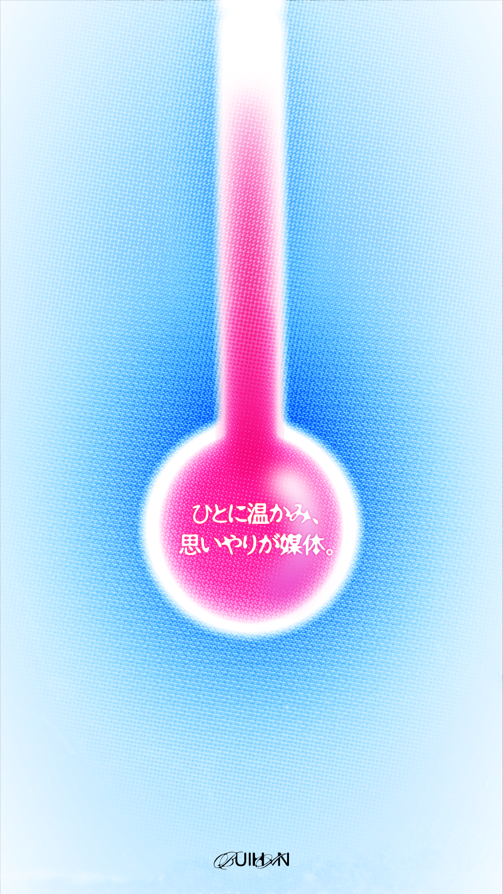

自己紹介カード SELF-INTRO CARD
作品概要 Overview
- 自己分析をもとに、キャッチコピーとビジュアルを制作する課題として取り組んだポスター作品 A poster project created as an assignment to develop a catchphrase and visuals based on self-analysis.
- 自身の性格を分析し、そこから形容詞を5つ抽出 Extracted five adjectives that best describe my personality through self-reflection.
- Instagramのストーリー上でも印象に残るポスター表現を目指した Aimed for a design that functions as an introduction and remains memorable even when viewed on Instagram Stories.
- 設定した形容詞：Selected Adjectives:
- 楽天的、こだわりがある、几帳面、気が利く、感情的 Optimistic, Detail-oriented, Meticulous, Considerate, Emotional
- キャッチコピー：Catchphrase:
- 「人に温かみ、思いやりが媒体」 "Warmth to people, kindness is the medium"
制作年月日 Production Date
2025年05月14日 May 14, 2025
制作担当 Role
- 自己分析Self-analysis
- 形容詞・キャッチコピーの考案Copywriting (Adjectives & Catchphrase)
- ポスターデザイン制作Poster design and layout
- 配色・書体選定Color palette and typography selection
コンセプト Concept
- キーワード「温かみ」から着想。温度計をメインビジュアルに採用 Inspired by the keyword "Warmth." Used a thermometer as the central visual element.
- 明るいピンク（暖かさ）とクールなブルー（冷たさ）でコントラストを設計 Designed a color contrast using bright pink (warmth) and cool blue (cold) to represent temperature differences.
- フロストガラス風のテクスチャと透明感を文字表現に取り入れた Incorporated a frosted glass texture and transparency into the typography.
工夫点 Reflections
- 全体構成がシンプルになりすぎ、タイポグラフィが目立っていない点が課題 The challenge remains that the composition is too simple, causing the typography to lack impact.
- 今後の改善点：Future Improvements:
- 文字サイズの調整と配置の工夫Adjusting font sizes and strategic placement.
- 視線誘導を意識したレイアウトCreating a layout that considers visual flow (eye-tracking).
制作環境と使用言語 Tools & Environment
Illustrator
×